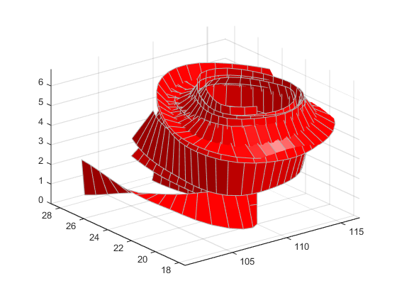

Displaying Curl with Stream Ribbons
What Stream Ribbons Can Show
Stream ribbons illustrate direction of flow, similar to stream lines, but can also
show rotation about the flow axis by twisting the ribbon-shaped flow line. The
streamribbon function enables you
to specify a twist angle (in radians) for each vertex in the stream ribbons.
When used in conjunction with the curl function,
streamribbon is useful for displaying the curl angular
velocity of a vector field. The following example illustrates this technique.
1. Select a Subset of Data to Plot
Load and select a region of interest in the wind data set using
subvolume. Plotting the full data
set first can help you select a region of interest.
load wind lims = [100.64 116.67 17.25 28.75 -0.02 6.86]; [x,y,z,u,v,w] = subvolume(x,y,z,u,v,w,lims);
2. Calculate Curl Angular Velocity and Wind Speed
Calculate the curl angular velocity and the wind speed.
cav = curl(x,y,z,u,v,w); wind_speed = sqrt(u.^2 + v.^2 + w.^2);
3. Create the Stream Ribbons
Use
meshgridto create arrays of starting points for the stream ribbons. See Specifying Starting Points for Stream Plots for information on specifying the arrays of starting points.stream3calculates the stream line vertices with a step size of.5.streamribbonscales the width of the ribbon by a factor of2to enhance the visibility of the twisting (which indicates curl angular velocity).streamribbonreturns the handles of the surface objects it creates, which are then used to set the color to red (FaceColor), the color of the surface edges to light gray (EdgeColor), and slightly increase the brightness of the ambient light reflected when lighting is applied (AmbientStrength).[sx sy sz] = meshgrid(110,20:5:30,1:5); verts = stream3(x,y,z,u,v,w,sx,sy,sz,.5); h = streamribbon(verts,x,y,z,cav,wind_speed,2); set(h,'FaceColor','r',... 'EdgeColor',[.7 .7 .7],... 'AmbientStrength',.6)
4. Define the View and Add Lighting
The
volumeboundscommand provides a convenient way to setaxisand color limits.Add a
gridand set theviewfor 3-D (streamribbondoes not change the current view).camlightcreates a light positioned to the right of the viewpoint andlightingsets the lighting method to Gouraud.axis(volumebounds(x,y,z,wind_speed)) grid on view(3) camlight right;
